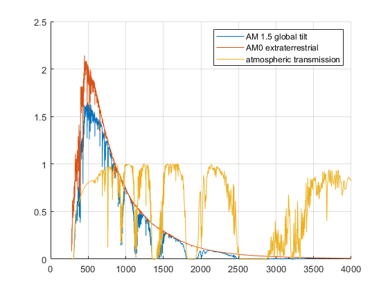
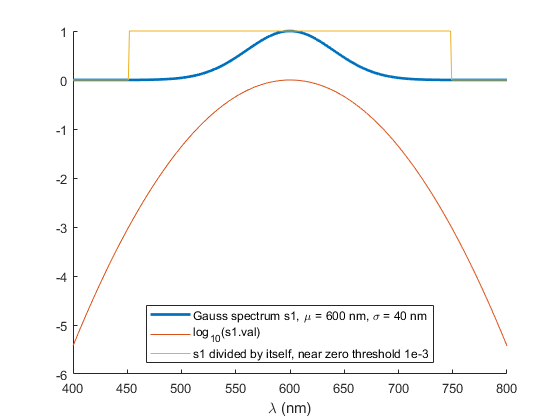

DivideSpectra
Navigate to: Home | Alphabetic list | Grouped list
Divide two spectra, with divide by zero treatment
Contents
Syntax
rv = DivideSpectra(lhs, rhs, opts)
Input Arguments
- lhs: A valid spectrum, i.e. a struct with two array fields, lam and val (see SpectrumSanityCheck for detailed requirements)
- rhs: Likewise
- opts: Name-Value pair. 'tiny' must be a positive double scalar. Default is eps, i.e. 2.2204e-16. Relative threshold to avoid division by (near) zero. Those rhs values whose magnitude is less than tiny * max(abs(rhs.val)) are effectively set to Inf, i.e. the division returns zero instead of some huge value.
Output Arguments
- rv: A spectrum modeling the division.
Algorithm
MultiplySpectra is called, with the inverse of rhs.val and the near zero division threshold properly applied. When the spectra have finite overlap, then the resulting wavelength range is that overlap. When the spectra only share a single wavelength, i.e. the only overlap at one point, or when the spectra don't overlap, the resulting spectrum has two wavelength values covering the full range, i.e. min(min(lhs.lam),min(rhs.lam)),max(max(lhs.lam),max(rhs.lam)) with rv.val == [0,0].
See also
AddSpectra, AddWeightedSpectra, IntegrateSpectrum, MultiplySpectra, ResampleSpectrum
Usage Example
function ExampleDivideSpectra() % compute and plot atmospheric transmission AM1_5 = SolarSpectrum('AM15_GlobalTilt'); AM0 = SolarSpectrum('AM0'); transmission = DivideSpectra(AM1_5,AM0); figure(); hold on; plot(AM1_5.lam,AM1_5.val); plot(AM0.lam,AM0.val); plot(transmission.lam,transmission.val); grid on; legend({'AM 1.5 global tilt','AM0 extraterrestrial','atmospheric transmission'}); % demonstrate division by near zero treatment s1 = GaussSpectrum(400:800,600,40); result = DivideSpectra(s1, s1,'tiny',1e-3); figure(); hold on; plot(s1.lam,s1.val,'LineWidth',2); plot(s1.lam,log10(s1.val)); plot(result.lam, result.val); legend({'Gauss spectrum s1, \mu = 600 nm, \sigma = 40 nm','log_{10}(s1.val)',... 's1 divided by itself, near zero threshold 1e-3'},'Location','South'); xlabel('\lambda (nm)'); end 